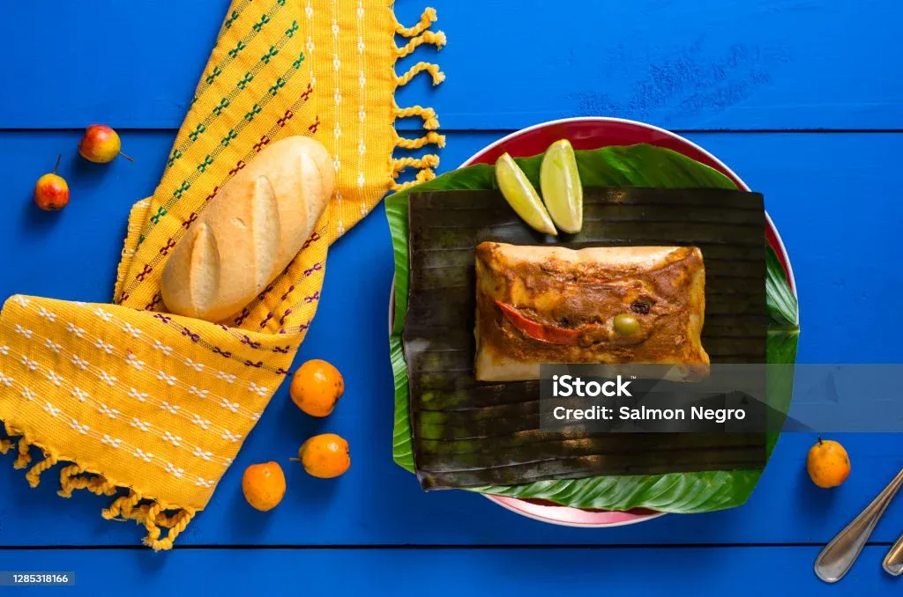
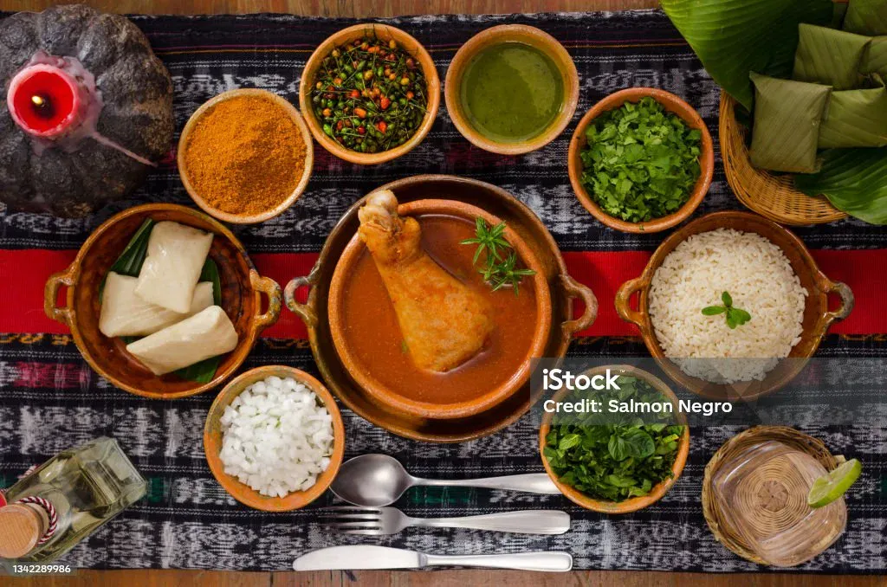
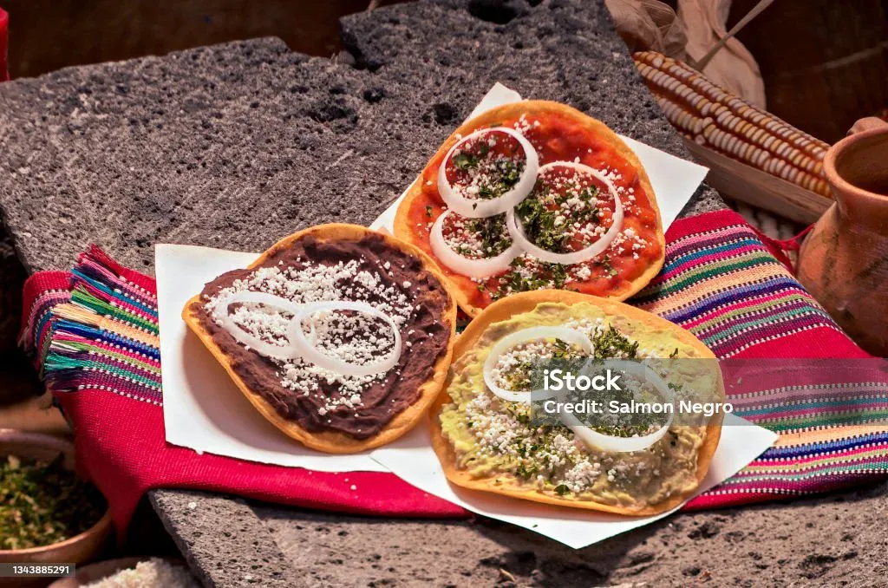

Tamales
A traditional dish made with masa and different fillings, wrapped and steamed in leaves.
Learn more about TamalesTraditional Guatemalan Cuisine
Guatemalan food tells stories about family, history, community, and the cultural traditions that have been passed from one generation to another.
Explore Traditional FoodsA Taste of Guatemala
Guatemala has a rich culinary tradition influenced by Maya culture, Spanish heritage, and regional ingredients. Corn, tomatoes, chilies, herbs, beans, and spices are important ingredients in many traditional dishes.
Traditional recipes are often connected to celebrations, family gatherings, religious traditions, and everyday life. Learning about these foods is also a way to understand Guatemala's cultural heritage.
Corn has played an important role in Guatemalan cuisine and Maya culture for centuries.
Featured Foods

A traditional dish made with masa and different fillings, wrapped and steamed in leaves.
Learn more about Tamales
A traditional Maya Q'eqchi' turkey soup known for its rich red color and aromatic spices.
Learn more about Kak-ik
Crispy tortillas served with toppings such as beans, tomato sauce, cheese, and onions.
Learn more about TostadasExplore & Learn
Explore the ingredients, preparation, and cultural meaning behind some of Guatemala's traditional foods.
Discover the Culture